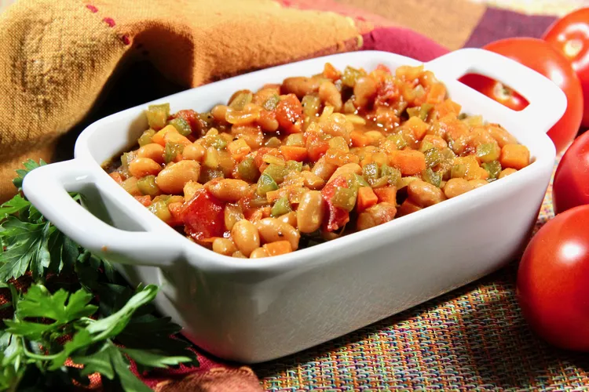

Chakalaka

Description
One of South africa savoury sides to enjoy with delicious pap
Ingredients
- 1 tablespoon oil, or as needed
- 3 medium onions, diced
- 2 medium green bell peppers, diced
- 3 medium carrots, diced
- 3 medium tomatoes, diced
- 2 small Thai green chiles, chopped
- ¼ cup water
- 1 cube vegetable bouillon
- 1 teaspoon curry powder, or to taste
- 1 teaspoon chili powder
- salt and ground black pepper to taste
Steps
- Heat oil in a skillet over medium heat; stir in onions and bell peppers. Cook and stir until the onion has softened and turned translucent, about 5 minutes.
- Add carrots, tomatoes, green chiles, water, bouillon cube, curry powder, chili powder, salt, and pepper. Cook until mixture is well combined and thickened, 15 to 20 minutes.
Home